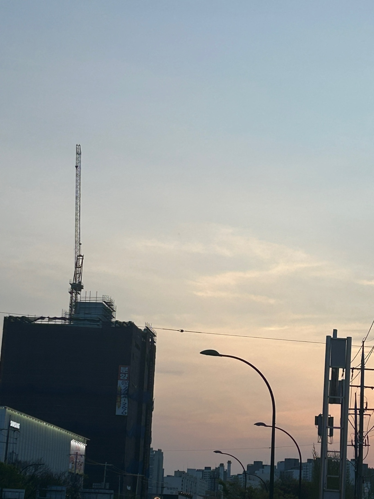

시집
저는 가끔 시집을 읽는 취미가 있습니다. 소설책과 같은 긴 글은 읽는 데 인내심이 필요하지만, 시집은 짧은 글에 많은 의미를 담고 있습니다. 훨씬 읽기 편하지만 큰 울림을 주어 좋아하는 것 중 하나입니다. 이번 주 새로운 시를 접하고 싶어 간 서점에서는“그대는 나의 여름이 되세요.”라는 시집이 저의 시선을 끌었습니다. 여름이라는 단어와 어울리는 시집의 표지가 저의 궁금증을 자극하였기 때문입니다.
벚꽃
벚꽃은 제가 가장 좋아하는 꽃으로 이번 주 만개한 벚꽃은 제 눈길을 가장 많이 끈 것입니다. 벚꽃을 보고 있으면 매년 4월 친구들과 함께한 벚꽃 구경이 떠오릅니다. 이번 연도는 대학교에서 만난 새로운 사람들과 함께 벚꽃 구경을 하였습니다. 도중 지나가던 아기에게 받은 벚꽃 덕분에 벚꽃이 주는 좋은 추억이 하나 더 늘었습니다. 이렇게 저에게 좋은 추억만 가득한 벚꽃은 매년 봄을 기다리게 합니다. 아기가 준 벚꽃은 오래 소장하고 제 휴대폰 케이스에 넣어 두었습니다.
종이컵
밥을 먹으러 간 식당에 있는“여러분 힘내세요”라는 문구가 적힌 종이컵입니다. 힘든 하루를 보내고 먹으러 간 라멘집에 있는 종이컵의 문구가 저에게 힘을 주었습니다. 평소에는 이런 말을 친구에게 듣거나, 지나가면서 보면 아무런 생각이 들지 않았습니다. 하지만 유독 피곤했던 날인지 정말 힘을 받았던 기분입니다. 작은 계기지만 앞으로 이런 문구를 보게 된다면 좀 더 사진을 찍어보려고 합니다. 또 글을 쓰는 지금은 주변 사람들에게도 더 좋은 말을 전달하자는 생각도 듭니다.
촛불
친구와 함께 간 식당에서 준 작은 초가 일렁이는 모습입니다. 자주는 아니지만 가끔 방에 불을 꺼두고 불이 일렁거리는 것을 구경할 때가 있습니다. 저 촛불을 볼 때 잠깐 그때가 생각났습니다. 향에 민감한 것은 아니지만, 좋은 향을 내는 초가 주는 행복함과 분위기가 좋아 초를 자주 구매했던 때도 생각이 났습니다. 이번을 계기로 한동안 잊고 살았던 제가 좋아하는 것을 떠올리게 되어 기분이 좋았습니다. 본격적인 여름이 오기 전 방에 여름과 어울리는 향을 장식하기 위한 초를 구매할 생각입니다.
고양이
고양이는 제가 좋아하는 동물 중 하나로 학교에서 마주칠 때마다 항상 사진을 찍게 되는 존재입니다. 고양이를 키운 적 없는 것이 아쉽습니다. 하지만 길거리에서 많이 볼 수 있다는 것만으로도 기분이 좋습니다. 고양이를 좋아하게 된 계기는 딱히 없습니다. 고양이가 다가와 제 손에 비비거나 귀여운 소리를 낸다는 점이 좋았습니다. 그러다보니 자연스럽게 제 마음속에 좋아하는 동물이 되었습니다. 기회가 된다면 키워보고 싶습니다. 하지만 잘 돌볼 수 있을까? 라는 생각에 항상 상상에서 멈추게 됩니다. 시간이 좀 더 지나 여유가 생긴다면 우리 집 식구의 일원으로 들이고 싶습니다.
학교
학교 수업을 마치고 가는 길에 뒤를 돌아본 순간 본 예술대학 건물입니다. 이 건물은 저의 수업 대부분 강의실이 위치한 곳입니다. 어쩌면 대학 생활 절반 이상을 보내게 될 곳입니다. 다닌 지 한 달밖에 안 되었지만, 이 장소가 벌써 익숙해지기 시작한 것이 신기합니다. 장소, 사람 가릴 것 같이 낯을 가리는 저에게 있어 벌써 익숙해졌다는 것은 그만큼 정이 들었다는 의미입니다. 영남대 안 제가 유일하게 지도를 안 보고 걸어올 수 있다는 것도 익숙해졌다는 증거인 것 같습니다.
하늘
이 하늘은 이번 주 본가인 영주에서 경산으로 돌아와 처음 본 하늘입니다. 노을지는 장면이 인상깊었습니다. 항상 길을 걷다가도 친구들과 하늘이 정말 예쁘다 하며 찍은 하늘들이 많습니다. 이 사진의 하늘은 영주에서 동대구를 거쳐 경산에 돌아와 피곤한 저에게 긴장감을 풀어주었습니다. 하늘에 대한 제 생각을 적다 보니, 내년 새해에는 꼭 일출을 보러 가야겠다는 생각도 듭니다. 항상 다짐했지만 못 했던 것 중 하나이기에 더욱 그런 생각이 듭니다.
버스 정류장
이 사진은 제가 영주를 떠나기 전 찍었던 사진입니다. 사실 영주에 도착하면 바로 보이는 풍경이 항상 제 눈길을 끌어 그 사진을 올리고 싶었습니다. 하지만 이번 주에는 너무 피곤했는지 영주에 도착하니 잠에서 깨 사진을 찍지 못해 아쉽습니다. 아쉬운 대신 출발 직전 보이는 정류장의 사진을 찍게 되었습니다. 항상 이 장소에서 엄마와 헤어질 때면 아직은 어색합니다. 이제 시간이 좀 더 지나면 익숙해질 것 같습니다. 혹은 시간이 지나 지금보다 자주 안 오게 된다면 더 아쉬움이 남는 장소가 될지도 모르겠습니다.
가로등 불빛
학교 늦은 시간 과실에 있을 때 본 가로등 불빛으로 계속 깜빡거리는 장면입니다. 처음에는 창문 너머로 자꾸 깜빡거리는 것이 있길래 저게 뭐냐는 생각이었습니다. 같이 있는 친구들이 가로등이라는 것을 알려준 뒤에는 가로등이 왜 저 위치에 있을까, 왜 깜빡거리는 것일까 등 자꾸만 궁금증이 생겼습니다. 이렇게 한 가지를 보면 여러 가지 생각이 들고 계속해서 스스로 상상하게 되는 것이 저의 특징입니다. 평소에도 갑자기 좀비가 들어온다면 같은 쓸데없는 상상을 하는 것을 좋아하는 저를 다시 한번 깨닫게 해 주는 계기였습니다.
노래
이번 주 저의 마음을 사로잡은 노래의 앨범 표지입니다. 이 노래는 blaming tiger의 SOS라는 노래로 코리안 록 장르입니다. 평소에도 록 장르의 음악을 좋아하는 저의 노래 취향을 저격했습니다. 앨범 표지 또한 흑백의 일러스트로 그려진 것이 재밌있었습니다. 이 글을 쓰면서 제가 새로운 노래를 발견하면 노래 제목보다도 앨범 표지가 마음에 들면 일단 재생한다는 점이 떠올랐습니다. 시간적 여유가 되는 날에는 제가 좋아하는 노래의 앨범 표지를 모아보고 싶습니다.